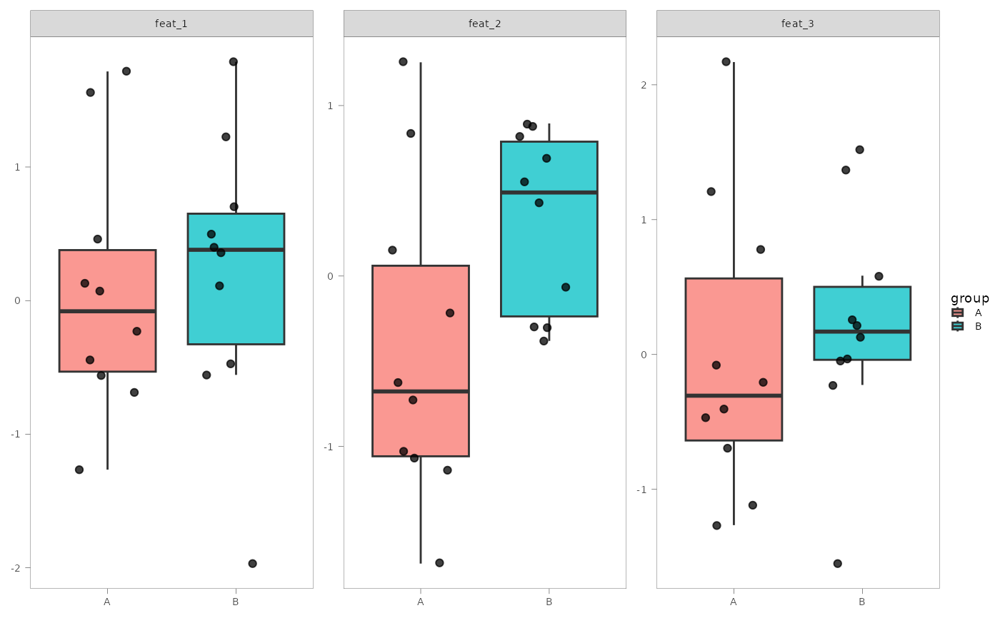
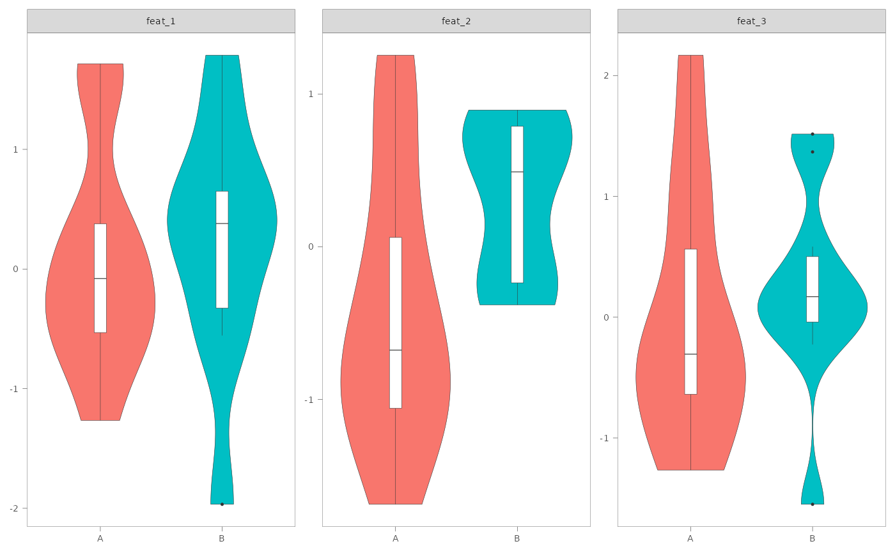

This function produces a range of coefficient- and feature-level plots from a dana object
for a given model term of interest. It supports both main effect and interaction terms,
and can visualize significant results from either fit or lrt P values.
Usage
ready_plots(
dana_obj,
term_name,
pval_match,
alpha = 0.1,
add_interactions = TRUE,
add_labels = TRUE,
plot_coeff = TRUE,
plot_feat = TRUE,
plot_ranef = FALSE,
X_colnames = NULL,
sdata_var = NULL,
group_colours = NULL,
paired_id = NULL,
verbose = TRUE,
...
)Arguments
- dana_obj
A
danaobject returned bydana(), containing model results.- term_name
The name of the model term to plot (e.g.,
"group"or"group:time").- pval_match
Regex pattern to match the desired P value column in the results.
- alpha
Numeric. Significance threshold to consider features for plotting. Default 0.1.
- add_interactions
Logical. Whether to include interaction terms related to
term_name.- add_labels
Logical. Whether to add custom feature labels in plots. A "feat_name" or "taxon_name" column must be in the
danaobject. Seeadd_taxa()andadd_feat_name().- plot_coeff
Logical. Whether to generate coefficient-level plots. Will generate volcano, heatmap and dot plots.
- plot_feat
Logical. Whether to generate feature-level plots for a specific variable in
sample_data.- plot_ranef
Logical. Whether to generate random effect variance plots. Only for mixed-effects models.
- X_colnames
Optional. Character vector specifying which features from
Xto plot. IfNULLandplot_feat = TRUE(the default), top 10 features based on P value are selected.- sdata_var
Character. A column in
dana_obj$sdataused for feature-level plots whenplot_feat = TRUE.- group_colours
Optional named vector of colours for
sdata_vargroups to be passed asvaluesargument toggplot2::scale_fill_manual().- paired_id
Optional. Column name in
sdataspecifying sample pairing (e.g., subject_id).- verbose
Logical. Whether to display messages during processing.
- ...
Additional
ggplot2::theme()arguments passed to internal plotting helpers (e.g., font sizes).
Value
A named list of ggplot objects stored in dana_obj$plots. These may include:
coeff_volcano,coeff_heatmap,coeff_pointfeat_scatter,feat_boxplot,feat_violin,feat_ridgeranef_all
Details
When add_interactions = TRUE, the function shows fit coefficients that
match significant main and interaction terms.
If no significant features are found under the specified alpha significance
threshold, the function will abort.
See also
dana()for fitting differential analysis models on omics datasets.add_taxa()andadd_feat_name()for adding feature labels to dana object.ggplot2::ggplot()andggplot2::theme()to further customise plots.
Examples
set.seed(123)
mock_X <- matrix(rnorm(20 * 5), nrow = 20)
colnames(mock_X) <- paste0("feat_", seq_len(5))
rownames(mock_X) <- paste0("sample_", seq_len(20))
sample_data <- data.frame(
sample_id = rownames(mock_X),
group = factor(rep(c("A", "B"), each = 10)),
time = factor(rep(c("T1", "T2"), times = 10)),
subject_id = factor(rep(seq_len(10), each = 2)),
stringsAsFactors = FALSE
)
rownames(sample_data) <- sample_data$sample_id
fit_df <- data.frame(
feat_id = rep(colnames(mock_X), each = 2),
Coefficient = rep(c("(Intercept)", "groupB"), 5),
Estimate = rnorm(10),
`Pr(>|t|)` = runif(10),
padj = runif(10),
stringsAsFactors = FALSE
)
# Mock dana object
dana_obj <- list(
X = mock_X,
sdata = sample_data,
formula_rhs = ~ group,
fit = fit_df,
lrt = data.frame(), #' empty but valid
ranef = data.frame() #' empty but valid
)
class(dana_obj) <- "dana"
dana_obj <- dana_obj |>
ready_plots(
term_name = "group",
pval_match = "padj",
alpha = 0.5,
add_labels = FALSE,
plot_coeff = TRUE,
plot_feat = TRUE,
plot_ranef = FALSE,
sdata_var = "group",
verbose = FALSE
)
# Visualize generated plots
dana_obj$plots
#> $coeff_volcano
#> Warning: Removed 2 rows containing missing values or values outside the scale range
#> (`geom_text_repel()`).
#>
#> $coeff_heatmap
#>
#> $coeff_point
#>
#> $feat_boxplot

#>
#> $feat_violin

#>
#> $feat_ridge
#> Picking joint bandwidth of 0.385
#>